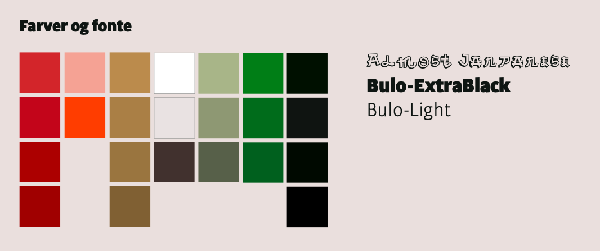
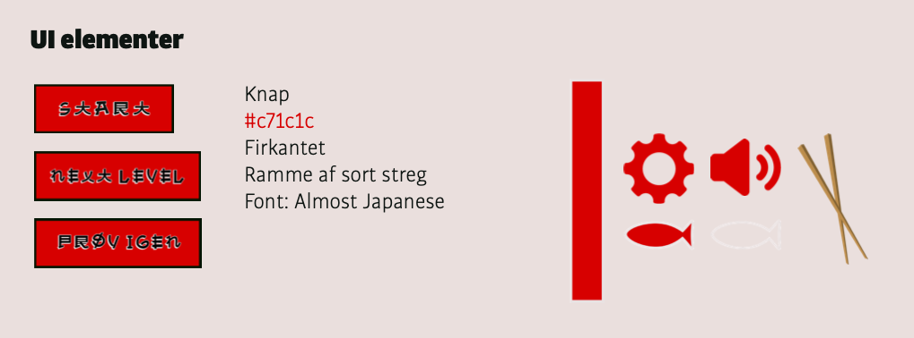
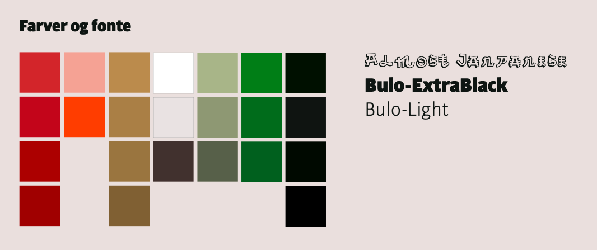
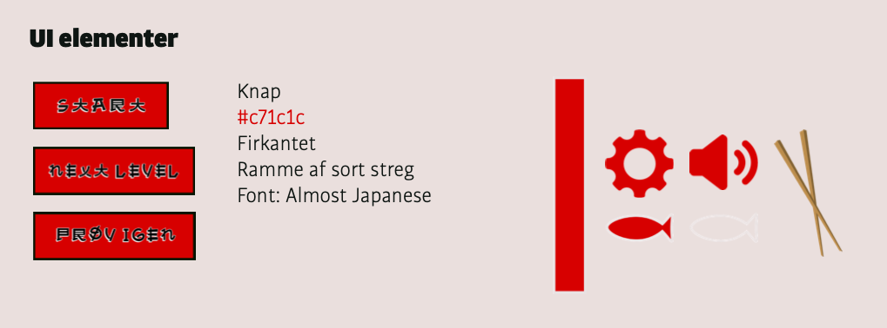

Grundlæggende animation
I 04 grundlæggende animation, var formålet opnå færdigheder for at kunne producere interaktive brugergrænseflader, for at motivere og engagere brugeren.
Idé og pro-produktion
I dette tema skulle vi producere vores eget interaktive animerede spil. I første fase var primære fokus at opnå viden om komposition og layout i digital medieproduktion. Derudover fik vi en række metoder til at kunne skitsere og idegenererings-teknikker for at fremme den kreative ideudvikling. Vi brugte f.eks. mindmaps og “kryds-metoden”, for at finde forskellige ideer til spillet. Derefter skulle vi skitsere spillet og lave det i en lofi papirudgave.
Da jeg tidligere har arbejdet som sushikok og elsker sushi, var min ide klar! Jeg ville lave “Sushi Spillet”. Ideèn med spillet er konceptet running sushi, på en restaurant, der nok ikke lige har en elite-smiley. Man skulle sørger for at samle det gode sushi, og undgå at spise det dårlige, for ikke at blive forgiftet.
Da vi havde skitseres vores ide, skulle den testes. Vi skulle vise en testperson, vores ide med spillet. Dette foregik gennem en hurtigt “tænke højt test”. De inputs jeg fik fra testpersonen, endte faktisk med at være afgørende for, hvordan mit spil skulle være.


 



Design og udvikling af brugergrænseflader
I denne del af teamet skulle vi ud fra vores opnåede viden og færdigheder, skabe spil-elementer, baggrundsdesign og ui-elementer. Her gjorde jeg brug af mine selvlærte evner i Adobe illustrator, til at skabe enkelt indhold, med en fast konsistens, så det hele passede sammen. Det var vigtigt at det skulle være et simpelt og overskueligt design. Min inspiration kommer primært fra mine egne projekter og flat design som helhed, som jeg lærte om i 02 grundlæggende web. Jeg synes at stilarten flat design, går hånd i hånd med den japanske minimalisme. Hvor ”less is more” Derfor har jeg forsøgt at anvende få elementer.
Jeg produceret en udvidet styletile, hvor jeg kommer omkring formgivning, farver, fonte, spil -og ui-elementer. Derudover skulle vi producere en assetsliste, med ovenstående, der skulle kodes i html og styles i css.
Kontakt mig her
Skriv til mig hvis du skal have løst inden opgave,
indenfor grafisk design eller opbygning af en hjemmeside